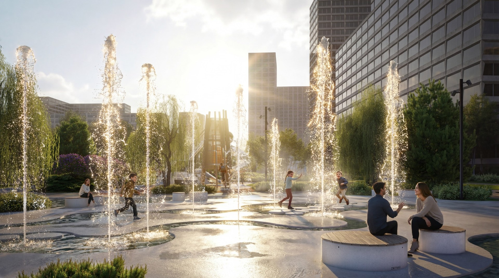
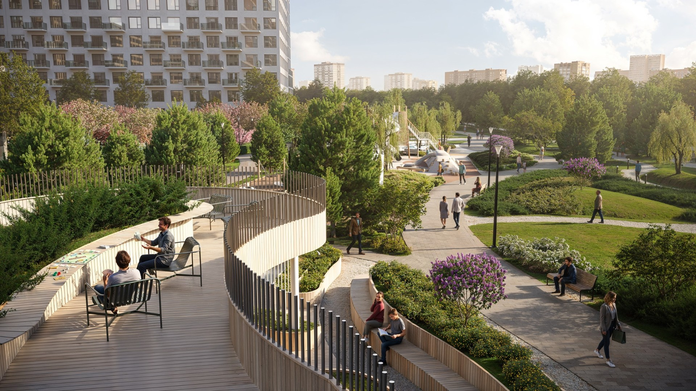
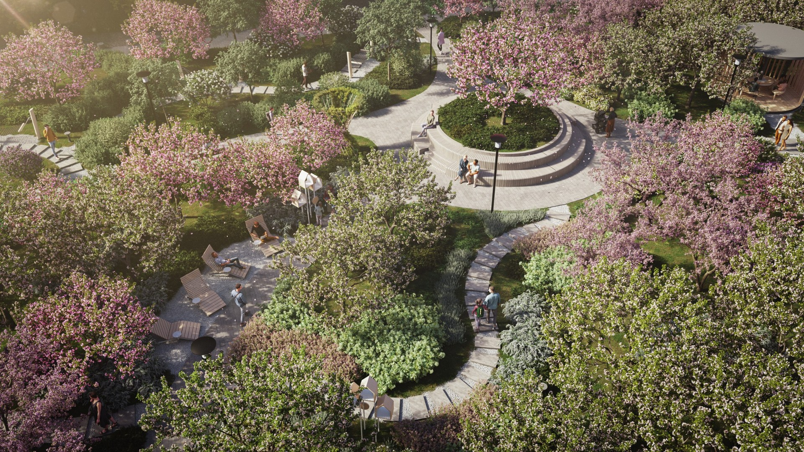
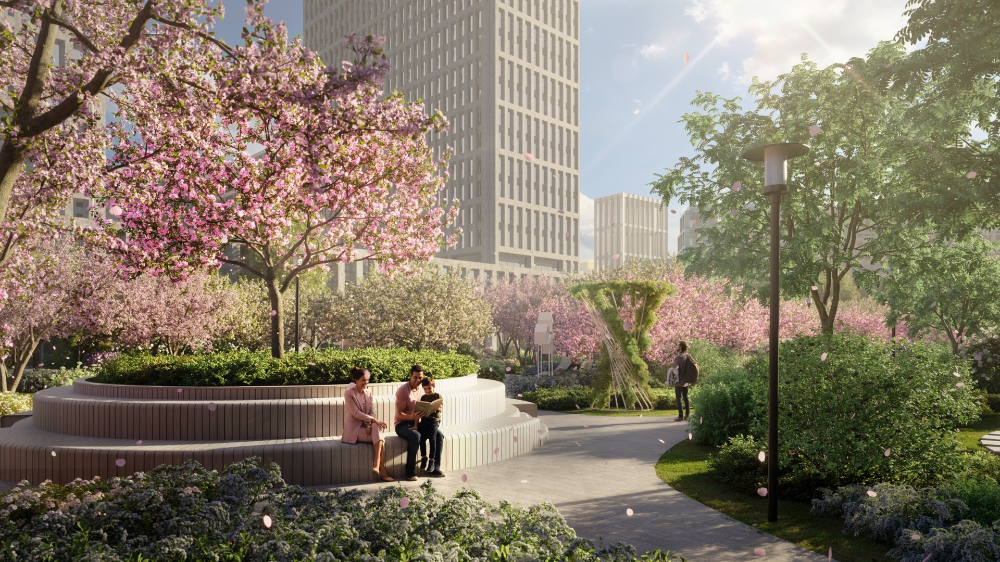
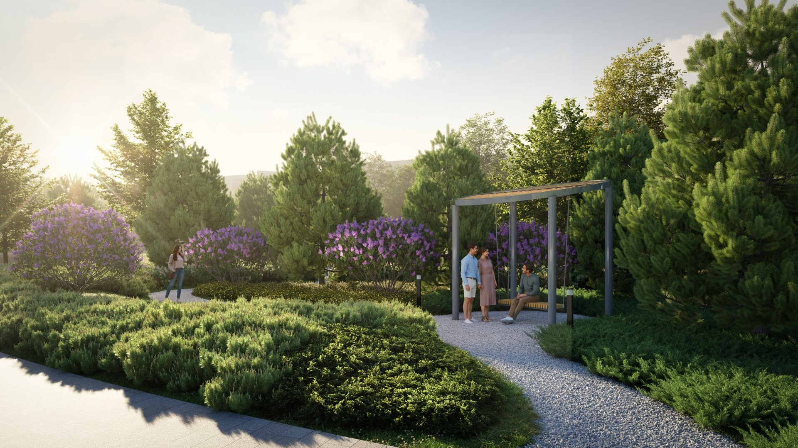
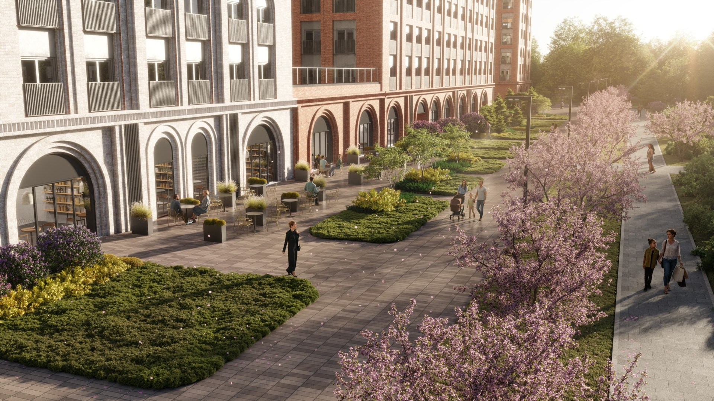
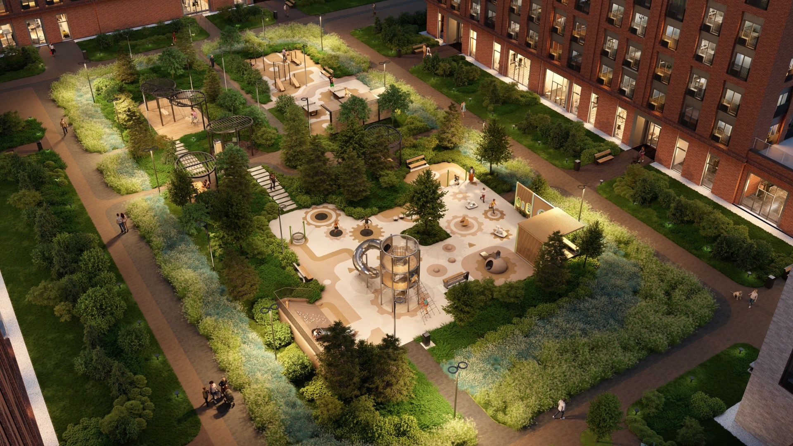
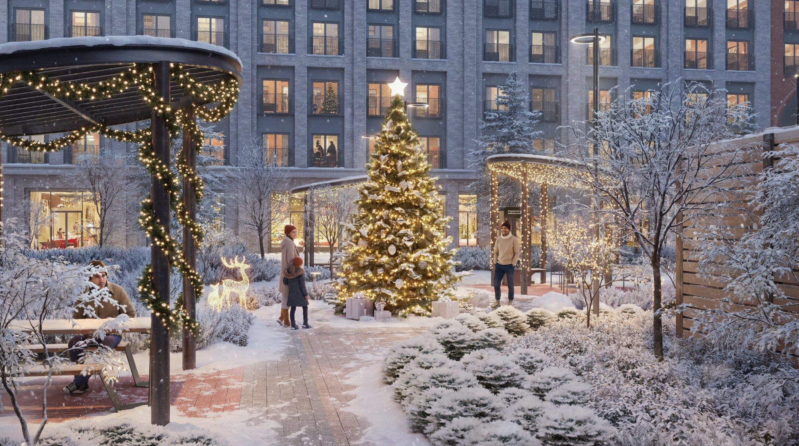
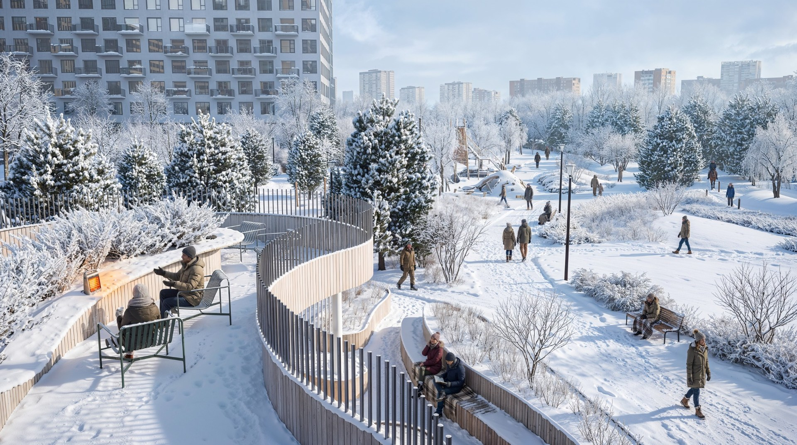

Здарова! Я живой)
Последний пост — 17 февраля. Сейчас октябрь.
Контент-план выдержан БЕЗУПРЕЧНО.
Но недавно пересматривал один старый проект и переписку по нему и поймал мысль, которую реально захотелось сюда принести.
Поэтому извините за задержку — вот вам мысль:
Архвиз в большом проекте — это вообще далеко не только «дали модель → сделал красиво».
Но сначала важное.
Эти картинки — не работа одного человека.
Проект я делал вместе с Андреем — @AndrewZ_o.
Я занимался общей сборкой сцен, материалами, светом, растительностью, постановкой кадров, рендерами, постом и всей финальной картинкой. А Андрей очень сильно разгружал меня по моделингу и техническим задачам.
Когда выяснялось, что нарисованную в проекте лавку нельзя просто взять из библиотеки — он собирал её рейками.
Когда нужно было нормально сделать деревянные ступени, борта, настилы и элементы благоустройства — моделил их.
Когда дорожки приезжали с геометрией и UV, на которые невозможно было смотреть без боли, — разбирался с сеткой и развёрткой.
Параллельно помогал собирать растительность и вообще закрывал кучу мелких задач, каждая из которых по отдельности вроде «на часик», а вместе спокойно съедает несколько рабочих дней.
В какой-то момент наш диалог выглядел примерно так:
— эту хрень надо переделать — понял — а тут ещё ступеней нет — щас — а здесь рейки — щас — дорожка палится — щас пошаманю — супер, забрал
И мне кажется, об этом вообще полезно иногда говорить.
Хорошая визуализация далеко не всегда плод одного человека, который героически умеет всё.
Иногда хороший результат получается именно потому, что один человек не пытается одновременно быть моделлером, текстурщиком, ландшафтником, фотографом, ретушёром и господом богом, а рядом есть человек, которому можно отдать задачу, которую он сделает быстрее и лучше.
А теперь, собственно, к мысли, ради которой я полез писать этот пост.
8 картинок, которые начинались с четырёх





Парк · C_01–C_05
В начале проекта речь шла о четырёх визуализациях.
Потом стало семь.
Потом восемь.
Часть исходников задерживалась.
Ракурсы продолжали согласовываться уже во время работы.
Какие-то куски благоустройства менялись.
Архитектуры вокруг парка местами ещё буквально не существовало.


Двор · C_07–C_08
И вот тут начинается та часть работы визуализатора, которую по финальным картинкам вообще невозможно увидеть.
Потому что в какой-то момент ты уже не просто открываешь модель, ставишь солнце, текстуришь и нажимаешь Render.
Ты начинаешь разбираться:
— какой высоты должна быть спирея;
— цветёт ли гортензия одновременно с яблонями;
— могут ли сейчас быть ягоды на деревьях;
— какие злаки посадить вдоль пожарного проезда;
— почему эта плитка выглядит как одна и та же текстура, размноженная сто раз;
— как физически могла бы собираться нарисованная лавка;
— что поставить на заднем плане вместо белой коробки, если самого здания ещё нет;
— и как сделать всё это так, чтобы зритель вообще ни о чём из перечисленного не задумался.
И вот это последнее, наверное, самое интересное.
Реализм работает не за счёт одной безумно детализированной модели.
Он работает через доверие.
Если человек выглядит настоящим — мозгу проще принять настоящее окружение вокруг него.
Если растение правильного масштаба — ты ему веришь.
Если плитка не выдаёт себя одинаковым паттерном — ты перестаёшь её замечать.
Если дальний дом не выглядит как SketchUp-болванка — у картинки внезапно появляется глубина.
Если материалы, свет, сезон, люди и растительность не противоречат друг другу — мозг перестаёт искать подвох.
И вот тогда изображение начинает работать. ✅


Зимние кадры · C_02 и C_06
Причём самое забавное, что большая часть работы направлена буквально на то, чтобы её не было видно.
Никто не посмотрит на итоговую картинку и не скажет:
«О, какая прекрасная UV-развёртка дорожки».
И слава богу.
Зато если она сделана плохо — её увидят все.
И, наверное, главный вывод, к которому я прихожу всё чаще:
визуализация — это не просто финальная упаковка уже готового проекта.
Очень часто именно на визуализации проект впервые начинает проверяться на правдоподобие.
Тут внезапно становится видно, что растение не того масштаба. Что узел красиво нарисован в плане, но непонятно, как он вообще должен собираться. Что материал слишком идеальный. Что на заднем плане чего-то не хватает. Что сезонность растений конфликтует между собой. Что пространство вроде бы спроектировано, но картинка всё равно почему-то не живёт.
И дальше начинается куча маленьких решений — со стороны архитекторов, ландшафтников, визуализатора, моделлера. Иногда вообще незаметных по отдельности.
Но именно из них в итоге и собирается убедительный мир.
Поэтому эти картинки — точно не история про «я сделал красивые рендеры».
Это результат работы команды и большого количества решений, которые зритель в идеале вообще не должен заметить.
Потому что если человек смотрит на финальную картинку и не думает о UV-развёртке дорожки, высоте спиреи, конструкции лавки или о том, настоящий ли дом стоит на заднем плане, а просто верит, что это место существует — значит, всё было не зря.
Наверное, для меня это и есть главный критерий хорошей визуализации.